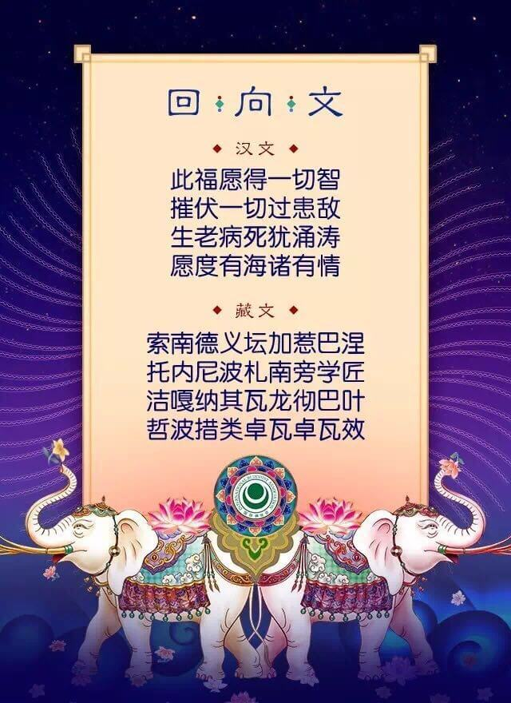

一、末法现状
每到初一、十五或者佛菩萨的圣诞，不少寺院都是人山人海，表现上信佛的人很多，但仔细观察就会发现大多数都是迷信。
现在是末法时代，众生的邪知邪见非常严重，对佛法的正知正见不堪一击。有些佛教徒表面上很虔诚，实则对佛教一无所知，尤其是业因果、生死轮回一点都不懂，对自己的五蕴和生活却相当执着，这样的人遍满天下。
有些佛教徒虽然也时常看一些佛法的文章，但完全没有次第，同时也缺乏善知识的指导。由于缺乏长期、系统、次第的闻思，相续中始终无法生起正见。现在很多佛教徒对基础的佛理普遍表现出两个不懂：这也不懂，那也不懂，完全无法堪为合格的佛弟子，虽然头顶着佛教徒的称号，但离真正的佛教徒还有十万八千里。
二、佛法根本
法华经中说，佛陀为一件大事来到世间，什么大事呢？就是令所有众生都获得解脱成无上正觉。为此佛陀讲经说法49年，一方面开示轮回的体相（无常、苦等），激发众生远离客尘的出离心。另一方面开示涅盘的体相（寂静、圆满等），激发众生对于解脱的欣求心，众生受教就可以远离尘劳回归法界。
放生、布施、供佛等虽然都是善法，但佛法的根本是教法和证法，也就是学习佛法和修行佛法。唯有依靠教证二法，完成戒定慧，息灭贪嗔痴，众生才能超越轮回、生死，灭尽一切烦恼、痛苦，达到究竟的涅盘、解脱。
三、深入经藏
佛教徒现在最缺什么？就是对佛陀所讲经典的了解。这种了解，并不仅限于十来部经，而应进行广泛的闻思。在短暂的人生中，读经就是最有意义的事情之一。阅读经典的过程中，自相续中的很多疑团成见、邪知邪念都会被逐渐根除。现在的人有各种疑惑，这应该说跟自己的闻思有一定关系。如果能够长期地学习，久而久之，自相续就找不出任何怀疑，也产生不了什么邪见，遇到任何一件事情，都觉得释迦牟尼佛说的千真万确，百分之百没有错误。遇到任何一个问题，依靠佛法的思维方式，也完全能够迎刃而解。所以，虽然现在的人很忙，生活节奏很快，但也应抽出一段时间来修学大乘经典，这绝对有必要！
大城市里的很多人真是非常可怜，每天就是吃喝玩乐，上班所占用的时间其实并不多。我们简单的计算一下，每天睡觉八个小时，上班八个小时，还有八个小时可以自己安排，除去吃饭、做家务等用四个小时外，其余的四个小时完全可用来学佛法。很多人总说自己没有时间，其实你是把时间用在吃喝玩乐上了，时间不是没有，只是自己不掌握、不运用而已。如果每天把时间安排好，这就是有智慧人的一种行为。有些人一天的时间掌握得相当好，除了修行和睡觉以外，基本上不会有任何散乱，即使散乱也能马上发现。但有些人根本没有时间概念，一年一下子就过了，人的一生很快也就过了，在这个过程中，我们若是一无所得，那非常不值得！
四、破除邪见
问：有时候觉得，人只要一直做善事就行了，花大量时间学习精通佛法是否有必要?
索达吉堪布：很多人都不懂佛法，行为不如法，表面上看来做了很多行善的事情，但实际上对自他都没有很大的利益。如果对佛法特别精通，表面上做得不一定很多，但实际上功德很大，对众生的利益也相当大。
有些人认为学习佛法是一种着相，没有必要，好好念佛就可以了。虽然一心一意、专心致志地虔诚念佛，因缘具足也可以往生极乐世界，但其中的虔诚和信心从何而来呢？既不会从天而降，也不会由地而生，只有通过长期系统的闻思而来。在闻思之后，才会有这些想法——我一定要一心不乱地念佛，我一定要发愿往生极乐世界。只有这样，才会有虔诚念佛的动力和信心。如果没有闻思，则所有的动力和信心都会缺乏来源。
五、闻法功德
《妙法莲华经》：若有闻法者，无一不成佛。
全知麦彭仁波切（文殊菩萨化身）这样讲过，最殊胜的是说法和闻法，最大的功德也是说法和闻法，然后中等的功德是自己修行，最下等的是自己念经。
弥勒菩萨在《宝性论》中说，一个人在千百万劫当中布施各种七宝供养十方诸佛，另外一个人在短时间内听闻了一句大乘法并升起信心，后者的功德要比前者大。弥勤菩萨又说，千百万劫中严守戒律也不如听四句法并对其生信心这个功德大。为什么呢？因为只有通过闻思升起智慧才能真正的摧毁三界，动摇轮回，所以布施、持戒、修行等功德都远远比不上闻法的功德。
六、劝学佛法
闻思和不闻思真的有很大差别，希望每个人通过学习，净化自己，与佛法相应。这样一来，不管在生活中、工作中遇到什么样的违缘，都有面对的能力和勇气。知道了万事万物的真相后，你快乐也可以、不快乐也可以，怎么样都可以坦然接受。
人没有读书，思想便会停顿。我们学佛也是同样，假如没有天天闻思，相续就会被各种杂乱所染污，善心、慈心、悲心等也会停滞不前，最后沦为一无所有的境地。因此，就算自己身陷红尘，也要以正知正念来摄持心相续，始终坚持闻思修行。
众生的祜主法王如意宝，他老人家一生中最强调的是什么？就是学习佛法，闻思修行，这对每个佛教徒来讲至关重要。一般来讲，法王如意宝要求，四十岁之前必须要精进地背书闻思，过了四十岁以后，才可以将所学的知识进行修持。其实，一边闻思一边修行，乔美仁波切说，这是最好的。白天闻思教义后，晚上再加以修持，每天在实际行动中不断串习法义，这就叫修行。反之，如果一点串习都没有，光是字面上夸夸其谈，这也没有什么用。
如果说“我现在已经闻思了五六年，可以了”，这是不行的。学习佛法要永无止尽，活到老，就要学到老、修到老。只有这样，佛教的见解才不会退失，帮助众生和净化自相续才有希望。否则，我们无始以来的习气极为坚固，恶习一旦爆发的话，很可能根本无法抵挡，做出的事情令自己后悔终生。
现在有些人闻思几个月、听几堂课，就认为自己成修行人了，这是绝对不行的。试想，世间上的学问，至少也要用将近十年来读小学、中学，且以这种学历想找到一份满意的工作，成为一个有智慧的人，也相当困难。佛教的知识更是浩如烟海、博大精深，你想掌握这种知识成为真正的修行人，最起码也要十年的时间。如果学了十年以上，十岁的孩子算是稍微长大了，但最好让他长到二十岁，那时候一切能自理了，没有父母照顾也不用担心了。所以，大家如果能在闻思道场中，系统地学习十年、二十年，以后就不用上师天天操心了。
不管是出家人、在家人，应该在十几年、二十几年中学习佛法、闻思佛法，这样自己的见解才会稳固，否则，短暂的时间内学一点，而且学得也不是很踏实，那这种见解不一定永恒存在。尤其是有缘分的话，应该从小就背诵串习大乘经论。新加坡有个9岁的小孩能背《入行论》，而且背得很快，相信他长大以后，不管受到什么样的学校教育和社会教育，都会有一种佛教的方向感，做任何事情都不会离开慈悲和智慧。作为父母，对孩子的这种教育其实非常重要。
以前格鲁派的格西噶登惹巴，他的一句话是这样说的：我从十一岁开始闻思经论，到现在七十多岁了，这之间每天都未中断过对经论的闻思修习，经过这六十多年刻苦努力，终于真正证悟了佛的密意。
我们如果也像他一样用这么长的时间，即使最后没有证悟，相续中也会得到不可退转的信心和定解。
七、修行佛法
佛陀所说的八万四千法门，归纳起来就是要调伏自己的心，而调伏心的前提必须要实修。我们学佛法的目的，同样也是为了断除烦恼，能够现前本来的真如觉性。但是，如果只偏重于闻思，而不注重实修，那断烦恼就成了剪苹果叶子般的修法，只注重表面而不注重实际。因为苹果叶子今年剪掉了，明年因缘和合时烦恼依然会现前的。
所以，学佛不只是为了做理论家、谈论家，积累佛学知识，学佛的目的是解脱、是成佛、度众生。一切闻思修都应从这点出发，而且注意力要放在如何修心、应修何法上面。这样的初发心非常关键，应时常铭记于心。须知，佛地之前均为有学地，均需闻思修，需辗转增上，故应发起从现在开始学到成佛为止的大心。佛法如大海，越转越深、越转越广。我们闻思就要和修心结合，逐渐将自相续转成圣贤的相续，转成佛菩萨的相续。
八、两者关系
闻思与实修，犹如人的两条腿一样，缺一条便不能行走。闻思和实修也好比我们生活中的氧气和水分，两者都是不可缺少的。
如有只有闻思没有实修，容易出现以下的过失：对法门有很大的执着，同时更多地诽谤其他宗派。心量很小，嫉妒心很强，对佛法升不起恭敬心，傲慢心很强，不能接受他人的批评，不能站在他人立场上看问题，接受他人的观点；看不到自己的过失， 随时可以看到他人的过失；心静不下来，组织能力很强， 但是修心体会很少；观察能力很强，不喜欢观察自己喜欢观察别人，但实际观察他人的能力很弱；无法调服自心，分析能力很强，但无法战胜习气；佛法道理很懂，但行为和想法经常有矛盾；佛法不能运用于生活，喜欢同别人辩论。会注重表面修行，渴望别人的认可和赞叹，在同他人接触的初期能给别人留下很好印象， 但时间长了别人会对他有一种僵硬的感觉；由于心的定力不足，接受、放下都很难。 所以只有闻思没有实修达不到目标。
如有只有实修没有闻思，容易出现以下的过失：修法思想很固执，很多道理不能接受，喜欢用自己的方法来让别人接受佛法；不喜欢同他人接触， 喜欢闭关；喜欢贪最高的境界，对禅修产生强大的执着；刚开始同别人接触的时候可以给别人很清静的感觉，但问一些修行的体会，不能够清楚回答， 他的方法很难帮助到别人；次第不清楚，修到一定的时候就很难修上去。
所以，我们必须把闻思和实修结合起来， 每天合理安排时间，一半时间花在闻思上，一半时间花在实修上。修行的体会必须跟上闻思，闻思一定要带着修行的体会往前走。这样的话，修行的障碍和困惑会越来越少，佛法和内心越来越相应。每天在愉悦的状态下生活和修行，对佛法的所有法门都会生起恭敬心。心量很大，遇到困难障碍的时候，可以运用佛法来解决。定力很强，不怕痛苦。慈悲心很强，随时能升起利他的心。勇气很足，办事能力强。智慧很广，能够解决自己和他人的问题。能够包容、尊重、珍惜一切，但也能随时放下一切。
九、修行要建立在闻思上
藏地着名的萨迦班智达曾说：没有如理闻思的修行，多数是旁生之因。法王如意宝也说过：没有闻思的修行是一种大空话，是一种邪道。
在藏地一个寺院门口，有个老喇嘛每天都坐在那里安住打坐，有一天他出定了，寺中一位青年的喇嘛就跑过去随喜赞叹，然后他就为老喇嘛宣说胜论外道的不可思议我，老喇嘛听后，马上竖大拇指说：对！对！这就是我的境界。这个公案主要是告诉大家，在你对见、修、行、果没有生起稳固的定解前，不要盲目的去安住、打坐，觉得自己修的是甚深的佛法，最后成为外道徒还不自知！
如果没有闻思，也就不会懂得什么是人身的意义，什么是无常，什么是苦，什么是人无我，什么是慈悲，什么是出离心，什么是因果，什么是生死的缘起，什么是三宝，什么是空性，什么是佛性。如此一来，人天善道、出离心、菩提心、出世间空性之道等，完全会隐没，最后不闻三宝之名，又怎会有教证二法住持世间呢？对个人而言，人天善道、解脱道、菩提道，只有依靠闻思才会了解，也只有串习闻思所决定的法义，才能在心中体证佛法。因此，一定要长期、系统、次第的闻思佛法。
宗萨仁波切：无论你能打坐多久，无论你多么不散乱，除非拥有正见，否则将一无所成。你仍然处于网中，仍旧是被捕的鱼。
正见从哪里来？从闻思佛法来。
见解是如此的重要，有见解的人哪怕做一个大礼拜，功德可能百千万倍超胜已经做了十万个但是没有见解的人，而见解来源于闻思：对佛陀的经典，菩萨的论典的广闻博学。如果闻思了不修行固然用处不大，但不闻思而修行，却是一种邪道，是所有祖师大德呵斥的。
有些师兄念佛、持咒非常的精进，但我们要经常反观自己的心：我对这个佛号、佛咒有信心吗？念佛有什么功德？原理何在？如果这些问题不清楚，内心深处就无法遣除存在的怀疑，这种怀疑暂时可能不会给你带来障碍或者违缘，但它是以潜伏的方式存在相续中。一旦爆发时，我们的信心可能瞬间就被摧毁，对佛法生起邪见，所以建立正见对一个佛教徒来说非常非常的重要。
持戒生善趣，正见得涅盘。
大家应该努力通过大量的闻思建立佛法的正见，再努力通过修行把见解转化为心相续的智慧，这就是闻思修的次第。
上师索达吉堪布在牛津大学演讲时说过：出家的前10年，他每天只睡3个小时，其他时间都在废寝忘食的闻思佛法。藏传佛教所有精通五部大论的论师，无不是年轻时就用十年、二十年的时间背诵大乘的经典、论典，树立对佛法坚定、不退转的信心。
我们今天看到上师讲法时引经据典、信手拈来，并非偶然，而是努力后的必然。
十、依止善知识
《华严经》云：佛法无人说，虽慧莫能了。佛法要是没有善知识讲解，世间再聪明、再有智慧的人，凭借自力也不能通达。
佛的侍者阿难，有一天觉得自己有所悟，就对佛说：世尊，我悟到一个道理，一个人一生道业的成就，老师要占一半的功劳。佛说：不对，一个人道业的成就，老师要占全部的功劳！
现在很多人不愿意听上师讲法，认为自己很有智慧，自学成才应该不成问题。但这恐怕有点不现实，为什么呢？从历代大德的传记中也可以看出，如果自学就能通达佛法的教义，这些大德们千辛万苦地寻找上师，并在依止的过程中承受种种苦行，这应该也是多此一举了！所以，我们在修学佛法的过程中，若想真正有所收获，必须认认真真地依止善知识，没有善知识的引导，你再有智慧也无法通达佛法的奥义。
末法时代，邪师说法如恒河沙。没有福报的弟子，常常遇到没有智慧的上师。末法时代出家师父（尤其是汉地）本来就少，加上每个人的因缘福报不同，所以不太可能每个人身边都有一个法师指导自己。但是，我们依止一个法师，不是依止他的身体，而是依止他的传承和教法。
一个具德的大乘善知识，应当具备2个条件。首先是“善巧大乘义”，即见解上精通大小乘显密教法，有能力摄受不同根器的众生；其次是“安住净律仪”，即修行上持戒非常清净，相续中具有菩提心，能够真正的利益一切众生。
如果您正在寻找具有这样法相的善知识，佛法人生给您推荐当代最具影响力的佛教大德一索达吉堪布仁波切。索达吉堪布仁波切依止法王如意宝为根本上师，精通五部大论和甚深密续，证达不可思议境界。
索达吉堪布：希望你们明白，哪里有我讲经说法的声音和视频，哪里就有我，和我亲自在那里没有差别。
进一步了解、关注、依止堪布仁波切，请关注佛法人生网微信公众号（xuefovip）回复关键词：上师。
十一、相关课程
佛法人生弘法平台给大家整理了系统、完善的佛学课程，关注佛法人生网微信公众号（xuefovip）后点击底部菜单即可进入学佛小程序。轮回的众生，都是贪玩的孩子。来学习佛法，我们一起回家。
